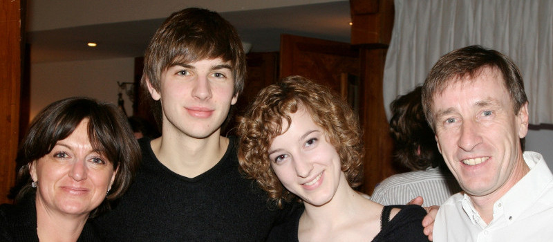

C’est le 22 juin 2013 à Paris que nous nous (re)rencontrons.
Longs cheveux et large sourire, Marion est interne des hôpitaux de Paris en chirurgie gynécologique. Née à Mulhouse, elle a commencé sa médecine à Strasbourg. Entre couture et voyages, c’est le scoutisme et la danse qui l’occupent quand elle ne travaille pas.
Aux cheveux moins soyeux mais compétitif sur le sourire, Clément est directeur des sytèmes d’informations à la Ruche qui dit Oui !. De Mulhouse aussi, il passe par Strasbourg en prépa puis à Nancy pour l’école d’ingénieur. Sa carrière musicale reste en attente.
La Famille Fermaut
Etienne, Sophie, Laure et Marion avec Claire et Jean-Marie qui se sont mariés le 4 septembre 1981 à Nancy.

La Famille Dietschy
Clément et Laura avec Sabine et Denis qui se sont mariés le 9 juin 1984 à Bartenheim.
Francoise et Jean
Françoise Boulmer et Jean Tardivel se sont mariés un 27 décembre 1956 à Saint-Brieuc.
Bernadette et Roger
Feu Bernadette Dissaux et Roger Fermaut se sont mariés le 9 novembre 1954 à Lacouture.
Georgette et Raymond
Georgette Kohler et Raymond Arbeit se sont mariés à Sierentz le 5 avril 1955.
Elise et Alphonse
Feu Élise et Alphonse Dietschy se sont mariés le 21 mai 1948 à Bartenheim.